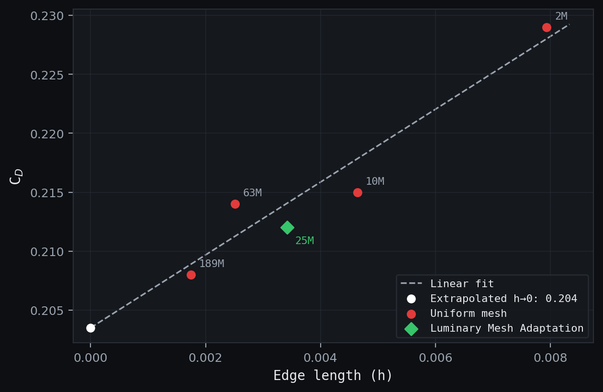
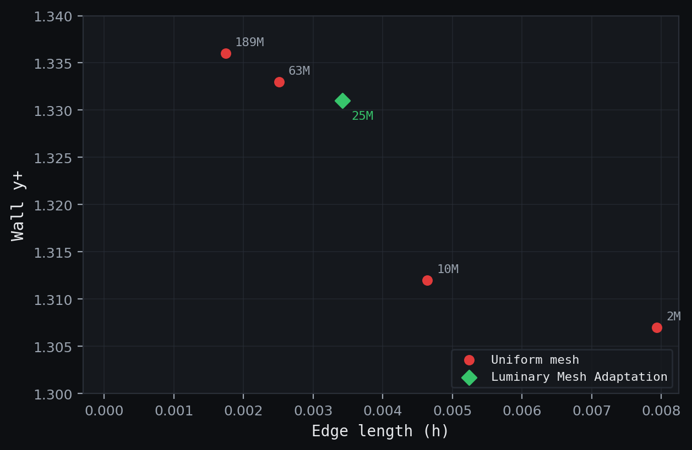
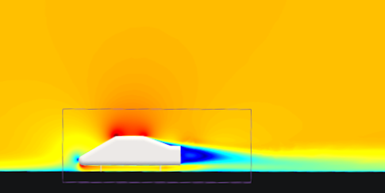

Luminary Cloud · CFD
Grid-Convergence Study: SAE Notchback
- Objective
- Quantify how predicted drag and near-wall resolution (y+) converge with mesh refinement on a standard automotive reference geometry, and evaluate whether adaptive meshing reaches comparable accuracy at reduced cell count.
- Tools
- Luminary Cloud (finite-volume RANS), Python.
- Role
- Built the mesh sweep, set prism-layer targets, ran the cases, and post-processed the convergence data.
- Result
- CD converged from 0.229 at 2M cells toward 0.208 at 189M cells under uniform refinement. An adaptively meshed run at 25M cells reached CD = 0.212, comparable to the 63M uniform-mesh result at roughly 40% of the cell count. y+ held near 1.3 across every mesh.
Problem
A CFD result is only trustworthy if it stops changing as the mesh is refined. A drag number from a single mesh could be a real prediction or an artifact of insufficient resolution, and there's no way to tell them apart without a convergence study. This study refines the volume mesh across nearly two orders of magnitude in cell count to find where the predicted drag settles, and checks whether Luminary's adaptive meshing can reach that settled value with fewer cells than uniform refinement requires.
The geometry is the SAE 20-Degree Notchback Automotive Reference Model, a public benchmark used for automotive aerodynamics validation.
Method
The flow was solved with steady RANS using the [SA / SST — to confirm] turbulence model. Boundary conditions: no-slip walls on the floor and body; symmetry planes on the Y bounds and Z-min; outlet at X-min; and a far-field inflow at X-max at Mach 0.1043 in standard sea-level air (≈35.5 m/s), corresponding to Re ≈ 2.0×106 on the 840 mm reference length.
Near-wall resolution was fixed independently of the volume mesh so that refinement changed only one thing at a time. Prism-layer settings were held constant across all meshes: 30 layers on the floor and 40 on the body, both with a first-cell height of 2.5×10−5 m and a growth rate of 1.2. This kept y+ near 1.3 on every mesh, so any change in predicted drag reflects volume-mesh refinement rather than a shifting near-wall treatment.
Five uniform meshes were run from 2M to 189M cells, refined by tightening the cell-size limits inside a refinement box around the vehicle. A sixth run used Luminary's adaptive meshing to concentrate cells where the solution needed them, at a total of 25M cells.
Convergence is measured against characteristic cell edge length rather than raw cell count, since edge length is the quantity that goes to zero as the mesh is refined and is the natural variable for grid-convergence analysis. For a fixed domain, edge length scales as h = (1 / cells)1/3, giving the values listed in the table above.
Results
| Mesh | Cells | Edge length | Drag (N) | CD | y+ |
|---|---|---|---|---|---|
| Coarse | 2M | 0.00794 | 14.046 | 0.229 | 1.307 |
| · | 10M | 0.00464 | 13.157 | 0.215 | 1.312 |
| Adaptive (LMA) | 25M | 0.00342 | 12.966 | 0.212 | 1.331 |
| · | 63M | 0.00251 | 12.899 | 0.214 | 1.333 |
| Fine | 189M | 0.00174 | 12.722 | 0.208 | 1.336 |
Under uniform refinement, CD falls steadily as cell count increases and begins to flatten toward roughly 0.208 at the finest mesh. y+ stays near 1.3 throughout, confirming the near-wall mesh was consistent across all cases. The drag trend is a refinement effect, not a byproduct of changing wall resolution.


The adaptive run is the more useful result. At 25M cells it predicts CD = 0.212, as close to the converged value as the 63M uniform mesh, reaching comparable accuracy at roughly 40% of the cells by placing resolution where the solution needed it rather than refining everywhere uniformly.

Honest assessment
The drag is still drifting slightly at the finest mesh (0.214 at 63M to 0.208 at 189M), so the solution is not fully in the asymptotic range, and the fitted trend suggests CD would settle a little lower with further refinement. A formal Richardson extrapolation and grid-convergence index (GCI) would quantify the remaining discretization error and give a bracketed converged value; that's the next step this study points to. The adaptive-meshing comparison is an accuracy-at-lower-cost result, not a claim that 25M cells reproduces the exact converged solution.